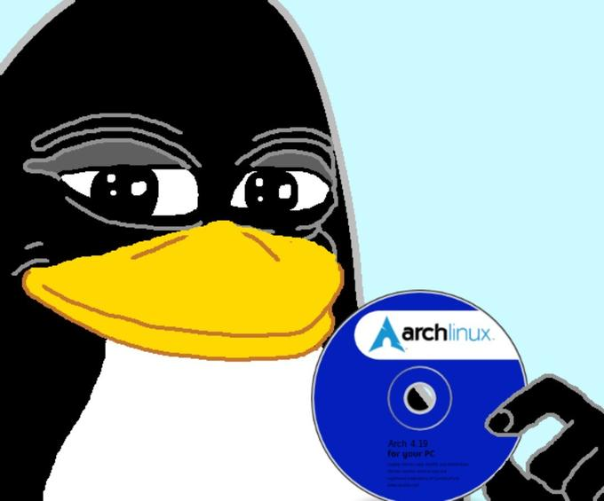

About Me:
Welcome to the digital realm of qir0r, where technology meets mastery. I'm a seasoned programmer and hacker with an insatiable passion for the cyber world. My journey began with a fascination for Linux and evolved into a lifelong dedication to pushing the boundaries of technology.
Skills:
- ☯ Advanced Linux Systems (Alt, Astra, Ubuntu)
- ☯ Virtualization & vSphere Management
- ☯ Proficient in C++
- ☯ Backend Development with Python & Flask
- ☯ Frontend Development with JavaScript & Node.js
- ☯ Expertise in Cybersecurity & Ethical Hacking

My Philosophy:
- Always seek out new technologies and methods to stay ahead in the ever-evolving tech landscape. Like the cycle of samsara, progress is constant and ever-changing.
- Never stop learning and adapting; the digital world is always changing. In the spirit of mindfulness, we must continually evolve and improve, recognizing that growth is a journey, not a destination.
- Act with awareness and integrity. In the world of hacking and technology, strive to minimize harm and make choices that contribute to the greater good.
- Share knowledge and collaborate with others to drive progress and foster innovation.
Get in Touch:
- Email: murasakitta@gmail.com
- Social Media: Follow me on [Twitter/Facebook/LinkedIn] for updates and insights.